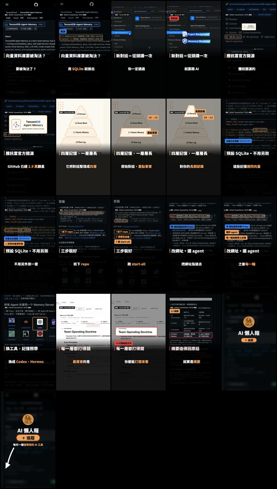
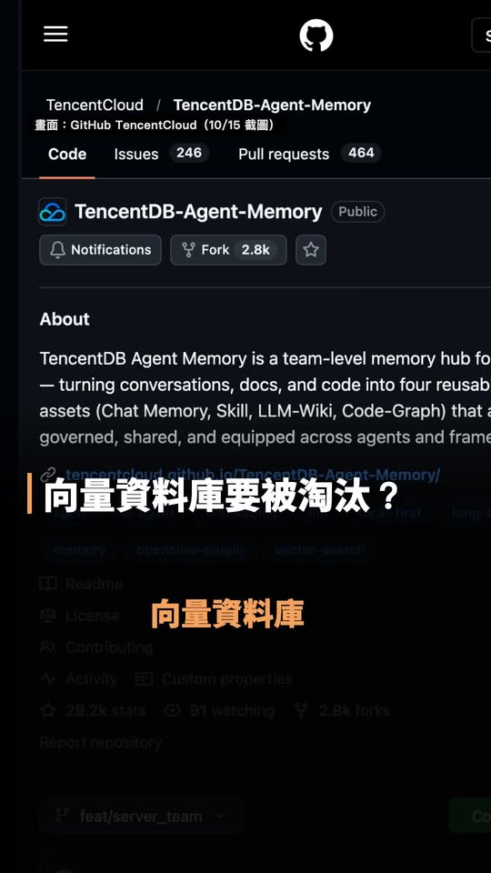

Facebook Reel｜TencentDB Agent Memory：用分層、可追溯記憶取代「只塞向量庫」的 Agent 記憶設計
一句話摘要
這支 Reel 的可取之處不是「不用向量資料庫」的絕對結論，而是把 agent memory 設計成可分層、可檢視、可回溯的證據鏈：高層只帶入方向與偏好，需要細節時再往下追到情境、事實與原始對話。

Reel 可直接支持的內容
AI懶人報於 2026-10-16 發布的約 42 秒 Reel，指向 GitHub 專案 `TencentCloud/TencentDB-Agent-Memory`。影片畫面與口述呈現：
- 將長期記憶表示為四層金字塔：L0 Raw Log／Conversation、L1 Atomic Memory／Atom、L2 Scene Block／Scenario、L3 Persona。
- 將「專案背景、歷史決策、長期偏好」視為不必在每個新對話重複說明的資訊。
- 顯示預設 SQLite 與 sqlite-vec 的設定畫面，並主張不必一開始另行架設向量資料庫。
- 顯示與 Claude Code、Codex、Hermes 等 agent 的整合情境，以及記憶內容可打開檢視、摘要能回追原始內容的概念。
影片的語音轉錄與畫面辨識彼此大致一致；產品與技術細節仍以下述 GitHub README 與授權檔為準。

GitHub README 可確認的產品設計
專案 README 將長期個人化記憶定義為：L0 Conversation（原始對話）→ L1 Atom（原子事實）→ L2 Scenario（情境區塊）→ L3 Persona（使用者輪廓）。高層保存偏好和方向，當需要驗證細節時可回鑽至較低層的證據。
短期任務脈絡則採另一條分層路徑：原始工具輸出會外卸至檔案，中層產生步驟摘要，頂層以 Mermaid canvas 表示任務狀態；README 說明可利用 `node_id` 回查原始文字。這比把所有歷史紀錄無差別塞入 prompt 更適合長任務，但實際品質仍取決於提取規則、召回策略與模型判斷。
README 列出的本地預設 backend 是 SQLite 加 sqlite-vec，也列出混合檢索（BM25、vector、RRF）。因此更精準的描述是：專案提供可先從本機 SQLite 開始的記憶方案，而不是證明向量檢索在所有情況下都已不需要。
Hermes 導入前的檢核點
README 確實列出 Hermes Gateway adapter 與既有 Hermes 環境的 plugin 接法，但這是需要安裝套件、設定 provider、配置 Gateway 及 LLM 憑證的整合，不是只改一個網址就自動安全可用。
導入前應先確認：
- 資料範圍：哪些對話、工具輸出、文件和個人偏好允許被捕捉；敏感資料是否排除。
- 保存位置與保留期：SQLite／工作目錄、備份、刪除與遷移策略是否符合需求。
- 召回可解釋性：能否打開 L2／L3 與底層原文，修正錯誤記憶而非只接受黑盒分數。
- 網路邊界：README 的 Gateway 例子使用 localhost；若改成跨主機服務，應另外設定身分驗證、存取控制與 TLS，不應直接暴露連接埠。
- 憑證與成本：記憶擷取、摘要與召回可能呼叫模型；API key 必須以環境變數或安全的 secrets 管理，不寫入 repository 或記憶資料。
- 漸進測試：先用非敏感測試專案與可刪除資料，觀察錯誤召回、資料膨脹和成本後，再擴大到長期工作流。
授權與專案狀態
本次擷取的 repository API 顯示約 2.9 萬 stars；這是擷取當下的可變動社群數字，不是品質或安全保證。GitHub API 的 license 欄位未提供標準 SPDX 判定，但 default branch 的 `LICENSE` 檔明列 MIT；實際採用仍應以當下 repository 的 LICENSE、第三方依賴與版本文件為準。
為什麼值得收進 AI 學習雷達
TencentDB Agent Memory 提供一個有教學價值的對照：好的長期記憶不等於「記得越多越好」，而是應同時具備最小必要注入、分層摘要、來源可回溯、人工可修正與敏感資料治理。即使不採用這個專案，這些也是評估任何 AI agent 記憶系統的重要標準。